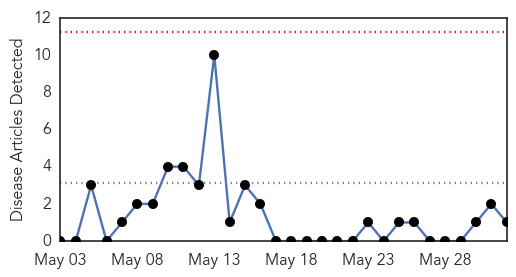
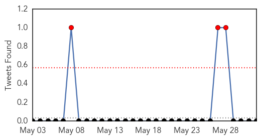
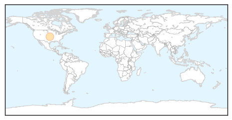
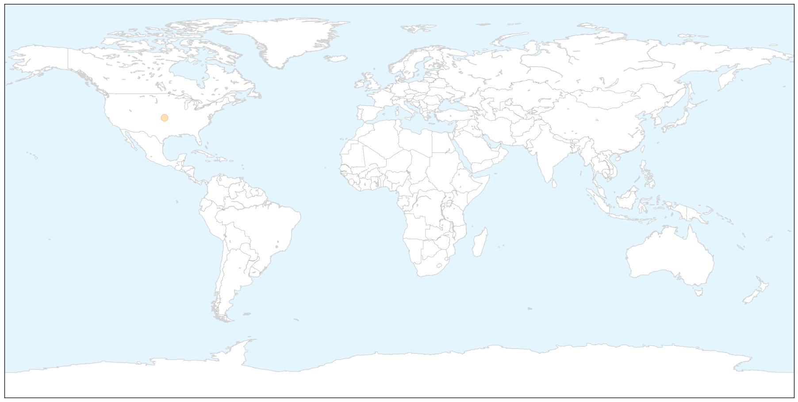
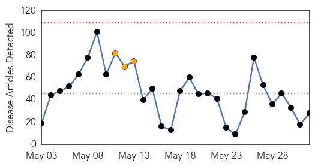
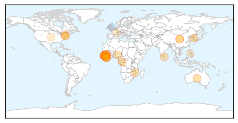
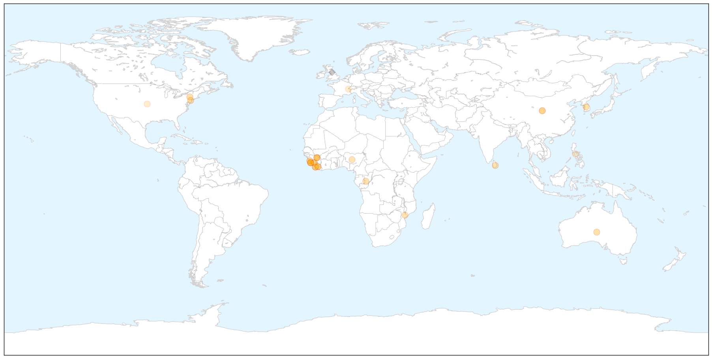

Swine Flu
30-Day Web Trend
0 alerts, 0 warnings

30-Day Twitter Trend
3 alerts, 0 warnings

Article Locations

X

Article Confidences

Top Articles:
Top Tweets:
-
No tweets found for Jun 01, 2015
Ebola
30-Day Web Trend
0 alerts, 3 warnings

30-Day Twitter Trend
0 alerts, 0 warnings

Article Locations

X

Article Confidences

Top Articles:
- 0.999
- Breaking news on Ebola virus
- 0.999
- An unprecedented year - Médecins Sans Frontières’ response to the largest ever Ebola outbreak, March 2014 to March 2015 - Sierra Leone
- 0.998
- 150 People May Have Had Contact With Lassa Fever Victim: CDC
- 0.997
- South Korea Isolates Almost 700 People In Struggle To Contain MERS Outbreak
- 0.995
- North Korea reports on South’s MERS outbreak
- 0.991
- Sudan Vision Daily
- 0.988
- Lawmaker held over unsafe burial in Ebola-hit SLeone: police
- 0.979
- Dangote Foundation Commits N906 Million To Ebola Fight
- 0.955
- Sierra Leone: Consolidated Message Guide for Ebola Communication in Sierra Leone - May 21, 2015 (Version 5)
- 0.938
- Liberians Cautioned against Stigmatizing Ebola Survivors
- 0.923
- Mobile Health Technology Assists with Maternal Care, Epidemics
- 0.922
- Work to resume at Liberia hydro plant after Ebola outbreak
- 0.902
- Ebola: Lawmaker arrested in Sierra Leone over unsafe burial
- 0.893
- SLWS Tribute Volume to Ebola Heroes
- 0.889
- Dean On Campus Lessons from the sixty-eighth World Health Assembly
- 0.863
- Welcome to the Expotimes News
- 0.823
- Ebola Rages Afresh in Kaffu Bullom (Lungi)
- 0.781
- The Light Foundation, World Education Ghana to sensitize 5,000 Muslims on Ebola
- 0.760
- Sierra Leone: IOM Regional Response to Ebola Crisis, External Situation Report, 29 May 2015
- 0.694
- Address By His Excellency Dr Ernest Bai Koroma President of the Republic of Sierra Leone at the EU Ebola Recovery Conference, Brussels
- 0.684
- Trust at heart of combating spread of Ebola
- 0.624
- IOM Regional Response to Ebola Crisis, External Situation Report, 29 May 2015 - Sierra Leone
- 0.579
- Momoh Konte, NATCOM Chairman speaks at WSIS Forum 2015, Geneva
- 0.575
- Reuters Health News Summary
- 0.572
- North Korea wants to woo millions to 'socialist fairyland'
- 0.550
- Messeh Leone Embarrasses Himself again
- 0.532
- Health officials are barking mad about legislation that would allow pet owners to bring their dogs into al fresco spaces of restaurants
- 0.522
- Sahel: Drought, displacement and conflict leave 20 million food insecure
Top Tweets:
- 0.722
- Ebola : 233 contacts à Kamsar selon le coordonateur local de lutte contre Ebola Guinea http://t.co/XllFpOphFr via
- 0.682
- Patient with Ebola-like symptoms taken to Johns Hopkins hospital - Washington Post http://t.co/iSVEn9eVYe ebola EVD
- 0.674
- Ebola crisis: The tree thought to be the source of outbreak - BBC News http://t.co/ugsQuvMxDi ebola EVD
- 0.660
- Ebola crisis: A tree thought to be source of outbreak - What r ur thoughts especially from ppl in Guinea Liberia or SierraLeone?
- 0.640
- Improving Ebola response through mobile data - Devex http://t.co/ctjbgxe6BV ebola EVD
- 0.618
- Trust at heart of combating spread of Ebola - Kennebec Journal & Morning Sentinel http://t.co/97nmTtMRzB ebola EVD
- 0.598
- UN Webcast Ebola virus impacts children... http://t.co/5VGaH1RdIm
- 0.584
- Twitter shared news of first Ebola case three days before officials study finds - Medical Xpress http://t.co/d4d0Dww8w5 ebola EVD